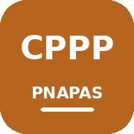

Remédiation PNAPAS – CE1 à CM2
Choisissez votre espace. Une fois ouvert, installez-le sur l’écran d’accueil (bouton « 📲 Installer l’application »).
Espace enseignantPlan de session hebdomadaire, tests ASER, documents d’accompagnement
Espace directeurFiche de suivi de l’école

Espace conseiller pédagogique (CPPP)Fiche de suivi du secteur pédagogique